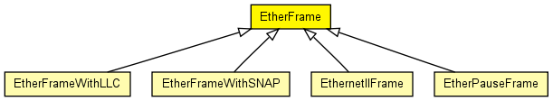

Common base class for classes representing Ethernet II and 802.3 frame types, containing their common header fields.
This class should never be instantiated by the models, only specific subclasses: EthernetIIFrame, EtherFrameWithLLC and EtherFrameWithSNAP.
Source and destination MAC address are stored in data members. Other fields include:
The following diagram shows usage relationships between types. Unresolved types are missing from the diagram. Click here to see the full picture.
The following diagram shows inheritance relationships for this type. Unresolved types are missing from the diagram. Click here to see the full picture.
| EtherFrameWithLLC (packet) |
Ethernet frame with 802.3 LLC header. |
| EtherFrameWithSNAP (packet) |
Ethernet frame with 802.3 LLC and SNAP headers. |
| EthernetIIFrame (packet) |
Ethernet II headers contain a 16-bit EtherType to identify the encapsulated protocol. |
| EtherPauseFrame (packet) |
Ethernet frame used by the PAUSE protocol |
| Name | Type | Description |
|---|---|---|
| dest | MACAddress | |
| src | MACAddress |
MessageId id; -- uncomment for tracing frames |
// // Common base class for classes representing Ethernet II and 802.3 frame types, // containing their common header fields. // // This class should never be instantiated by the models, only specific // subclasses: EthernetIIFrame, EtherFrameWithLLC and EtherFrameWithSNAP. // // Source and destination MAC address are stored in data members. // Other fields include: // - preamble: not stored (only contributes length) // - length: stored in cMessage length, not stored explicitly // - payload: stored a encapsulated packet (cMessage::encapsulate()) // - crc: represented by cMessage::hasBitError() // packet EtherFrame { MACAddress dest; MACAddress src; //MessageId id; -- uncomment for tracing frames }